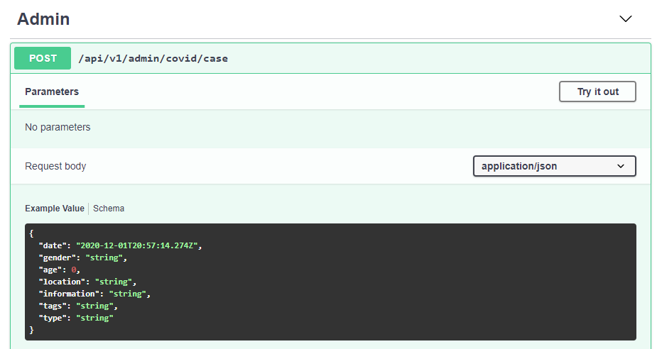
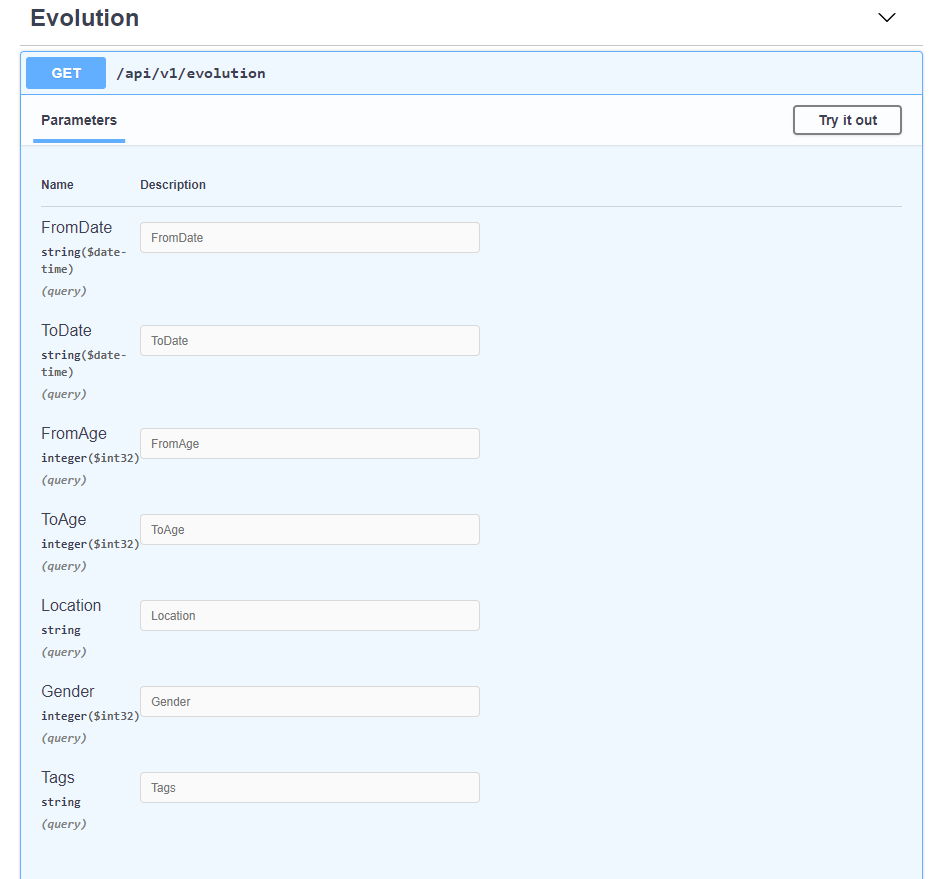
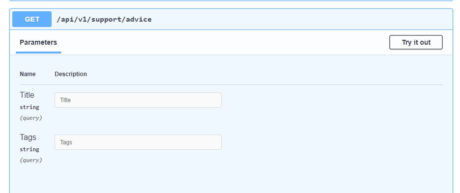
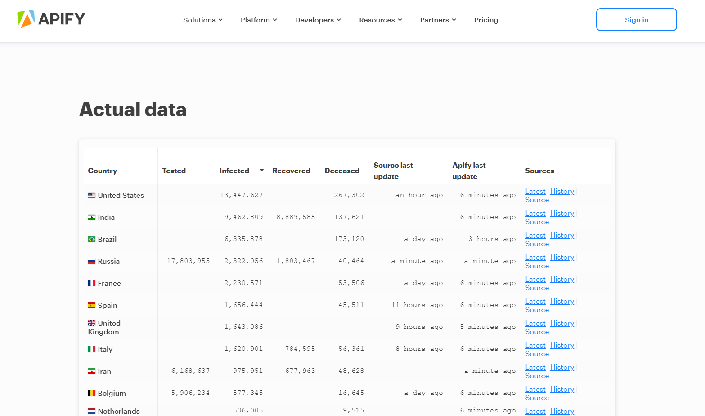

In this document we will present the internal data models to be used and the external data sources managed by the Web application which we will implement.
Data visualization refers to the techniques used to communicate information from data through visual representation. Its main purpose is to distill large data sets into visual graphics to allow an easy understanding of the complex relationships within the data. It is often used in a way interchangeable with terms such as informational graphics, statistical graphics and information visualization.
It is one of the steps in the data science process developed by Joe Blitzstein, who is a framework to address the tasks of data science. After the data is collected, processed and modeled, relationships must be visualized so that a conclusion can be drawn.
For this reason, planning the models used in the Web application is an important process for the user to benefit from the best information when accessing the web page.
The context of use is the real conditions in which a given software product is used or will be used in a normal daily work situation.
COVID-19 data for all site is an evolving software product that provides the latest data for the entire population of the planet about the latest statistics on the global spread of the virus. Users who access this community have access to the latest information about coronavirus, such as:
The sites about coronavirus are the most used sites in the last year. How virus can affect anyone, the site is accessed mainly by a majority of the globe with access at the Internet.
The Web application developed by us has two types of users, those who manage the page and the public one who can access information about coronavirus.
Administrators are the ones who can add new coronavirus cases, tips against the virus and the latest virus information to the application. To add a new coronavirus case, the administrator must add the following information: the day the case was reported, the person's gender, age, location, and other relevant data. To add new virus advice or information, the administrator must add a title, description, and certain tags to make them easier to be found.
Here you can see the model for adding a new case of coronavirus.
A person who visits the web page can view statistics about the evolution of the virus or predictions for the next days of the virus over a certain period of time, over a certain age range, location, gender or different tags. Below you can see a model of an evolution.
A user can also look for some tips for preventing the virus based on a title or certain tags.
External data is data that is not collected by us. This data would be obtained from a source outside of our project. For a start we thought of using the Apify API which gives us information about coronavirus from a selected country.
Our application conforms with the linked data principles because we use RDF and for a specific URI the application will create a query that provides useful information about what the user was looking for. We use URI as names for things, and users will use HTTP URIs to search for some informations.